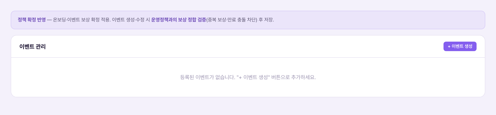
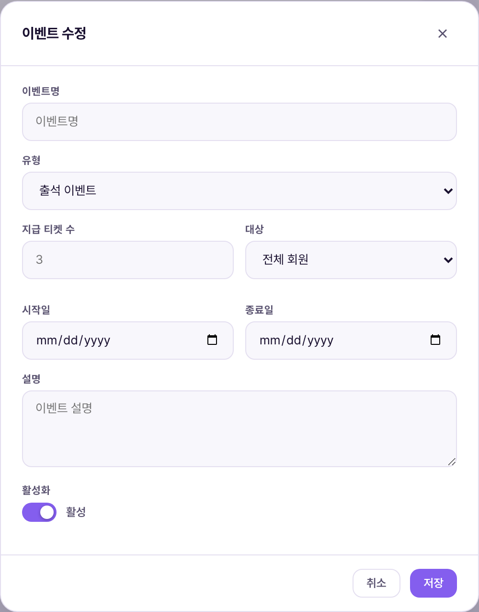

이벤트 관리는 출석 이벤트·가입 보너스·등급 달성 보상 같은 "티켓을 주는 이벤트"를 등록하고 카드 목록으로 관리하는 화면입니다. 배너가 "알리는" 용도라면, 이벤트는 실제로 회원에게 티켓·포인트를 지급하는 규칙 자체를 정의합니다. 화면 상단 안내처럼, 이벤트를 만들거나 고칠 때는 운영 정책과 어긋나지 않는지(중복 보상·만료 충돌 등) 확인 후 저장해야 합니다.Quản lý sự kiện là màn đăng ký và quản lý dạng thẻ các "sự kiện phát vé" như sự kiện điểm danh·thưởng đăng ký·thưởng đạt hạng. Nếu banner dùng để "thông báo" thì sự kiện định nghĩa chính quy tắc cấp vé·điểm thật sự cho hội viên. Như thông báo phía trên màn hình, khi tạo hoặc sửa sự kiện cần kiểm tra không mâu thuẫn với chính sách vận hành (thưởng trùng·xung đột hạn dùng...) rồi mới lưu.

캡처 시점 데모에는 등록된 이벤트가 하나도 없어 "등록된 이벤트가 없습니다. + 이벤트 생성 버튼으로 추가하세요" 안내만 보입니다. 화면 상단의 "정책 확정 반영" 안내 박스는 실제 문구 그대로입니다.Tại thời điểm chụp, demo chưa có sự kiện nào nên chỉ hiện hướng dẫn "Chưa có sự kiện đăng ký. Thêm bằng nút + Tạo sự kiện". Hộp thông báo "Áp dụng chính sách đã chốt" phía trên là nguyên văn thật.

| 요소Thành phần | 의미Ý nghĩa | 바꾸면 생기는 일Điều gì xảy ra khi thay đổi |
|---|---|---|
| 이벤트명Tên sự kiện | 카드 제목으로 쓰이는 이벤트 이름Tên sự kiện dùng làm tiêu đề thẻ | 필수값 — 비우면 저장 자체가 막힘("이벤트명을 입력하세요")Bắt buộc — để trống thì không lưu được ("Nhập tên sự kiện") |
| 유형Loại | 출석 이벤트 / 가입 보너스 / 등급 달성 / 직접 지급 4종 중 선택Chọn 1 trong 4: sự kiện điểm danh / thưởng đăng ký / đạt hạng / cấp trực tiếp | 분류값으로만 저장됨 — 유형에 따라 지급 로직이 자동으로 달라지지는 않음(운영자가 설명·조건을 직접 기술)Chỉ lưu như một giá trị phân loại — logic cấp thưởng không tự đổi theo loại (vận hành viên phải tự mô tả điều kiện) |
| 지급 티켓 수Số vé cấp | 이벤트 달성 시 지급할 티켓 수량(숫자)Số lượng vé cấp khi đạt điều kiện sự kiện (số) | 숫자로 저장만 될 뿐, 실제 지급은 자동 실행되지 않음 — 아래 3번 참고Chỉ lưu dạng số, việc cấp thật KHÔNG tự động chạy — xem mục 3 bên dưới |
| 대상Đối tượng | 전체 회원 / 신규 가입자 / 브론즈 / 실버 / 골드 중 선택Chọn: toàn bộ / mới đăng ký / Đồng / Bạc / Vàng | 카드에 표시되는 설명 값 — 실제 대상 필터링이 시스템적으로 걸리는지는 이 화면만으로는 확인되지 않음(미확인)Chỉ là giá trị mô tả hiện trên thẻ — chưa xác nhận được việc lọc đối tượng có thực thi ở hệ thống hay không (chưa xác nhận) |
| 시작일 · 종료일Ngày bắt đầu · kết thúc | 이벤트 진행 기간Kỳ hạn diễn ra sự kiện | 배너와 마찬가지로 저장되는 정보값이며, 기간 종료로 자동 비활성화되지 않음(미확인 = 자동 처리 로직 없음)Giống banner, chỉ là giá trị lưu trữ, KHÔNG tự tắt khi hết hạn (chưa xác nhận = chưa có logic tự động) |
| 설명Mô tả | 카드 하단에 보이는 이벤트 설명 문구Câu mô tả hiện dưới thẻ sự kiện | 회원에게 보여주는 게 아니라 운영자용 카드 설명 — 회원 화면 노출 여부는 별도 확인 필요Không hiện cho hội viên mà là mô tả thẻ cho vận hành viên — cần xác nhận riêng việc có hiện ở màn hội viên hay không |
| 활성화 토글Toggle kích hoạt | 이벤트를 지금 "진행 중"으로 표시할지Có đánh dấu sự kiện đang "Đang diễn ra" ngay bây giờ hay không | 배너의 노출 상태 토글과 동일한 성격 — 목록 카드의 상태 배지를 바꿈Cùng tính chất với toggle trạng thái hiển thị của banner — đổi badge trạng thái trên thẻ danh sách |
이 화면은 "이런 이벤트가 있다"는 카드형 안내판에 가깝습니다(확인됨: evSubmit 함수는 events 컬렉션에 제목·유형·지급수·대상·기간·설명·활성화 여부만 저장). 실제로 회원 계정에 티켓이 꽂히는 지급 처리는 온보딩·출석·구매확정 같은 각 기능의 자체 로직(수동 티켓 지급 등)에서 이뤄지며, 이 화면에서 이벤트를 만든다고 자동으로 전체 회원에게 티켓이 뿌려지는 것은 아닙니다. 즉 이 화면은 "무엇을 진행 중인지 정리하는 운영 게시판"이며, 실지급은 각 기능이 담당합니다.Màn này giống một bảng thông báo dạng thẻ "đang có sự kiện gì" (đã xác nhận: hàm evSubmit chỉ lưu tiêu đề·loại·số lượng cấp·đối tượng·kỳ hạn·mô tả·trạng thái kích hoạt vào collection events). Việc cấp vé thật vào tài khoản hội viên diễn ra ở logic riêng của từng tính năng như đăng ký·điểm danh·xác nhận mua hàng (cấp vé thủ công...), không phải cứ tạo sự kiện ở màn này là tự động phát vé cho toàn bộ hội viên. Nói cách khác, màn này là "bảng vận hành tổng hợp đang diễn ra gì", việc cấp thật do từng tính năng đảm nhiệm.
| 상황Tình huống | 운영자가 하는 일Việc vận hành viên làm | 결과Kết quả |
|---|---|---|
| 5월 출석 이벤트 신설Mở sự kiện điểm danh tháng 5 | 유형 "출석 이벤트" 선택 → 설명에 "5일 연속 출석 시 500P+티켓 1장" 기재 → 활성화 ONChọn loại "Sự kiện điểm danh" → ghi mô tả "Điểm danh 5 ngày liên tiếp được 500P+1 vé" → bật kích hoạt | 목록 최상단에 "진행 중" 카드로 등록. 실제 지급 로직은 출석체크 기능 쪽에서 별도로 맞춰야 함Thẻ "Đang diễn ra" xuất hiện đầu danh sách. Logic cấp thật cần khớp riêng ở tính năng điểm danh |
| 이벤트 조기 종료Kết thúc sớm sự kiện | "수정" → 활성화 토글 OFF (또는 삭제)"Sửa" → tắt toggle kích hoạt (hoặc Xóa) | 카드 상태만 바뀌거나 카드 자체가 사라짐 — 이미 지급된 티켓·포인트는 회수되지 않음Chỉ đổi trạng thái thẻ hoặc thẻ biến mất — vé·điểm đã cấp trước đó KHÔNG bị thu hồi |
| 정책과 다른 이벤트 실수 등록Lỡ đăng ký sự kiện sai chính sách | 상단 "정책 확정 반영" 안내대로 운영 정책(참여·이벤트 탭)과 대조Đối chiếu với tab Chính sách vận hành (Tham gia·Sự kiện) theo hướng dẫn "Áp dụng chính sách đã chốt" phía trên | 중복 보상·만료 충돌 여부는 화면이 자동 검증하지 않으므로 운영자가 직접 확인해야 함(미확인 = 자동 검증 로직 없음)Việc trùng thưởng·xung đột hạn dùng KHÔNG được màn hình tự kiểm tra, vận hành viên phải tự đối chiếu (chưa xác nhận = chưa có logic tự kiểm tra) |